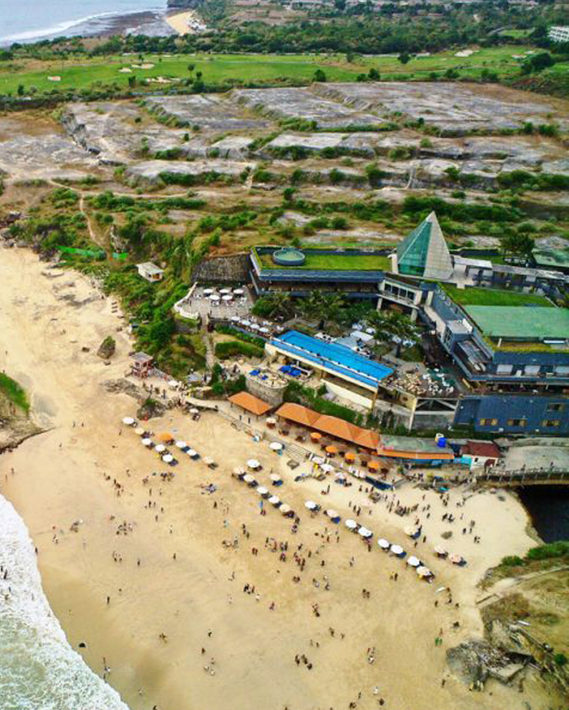
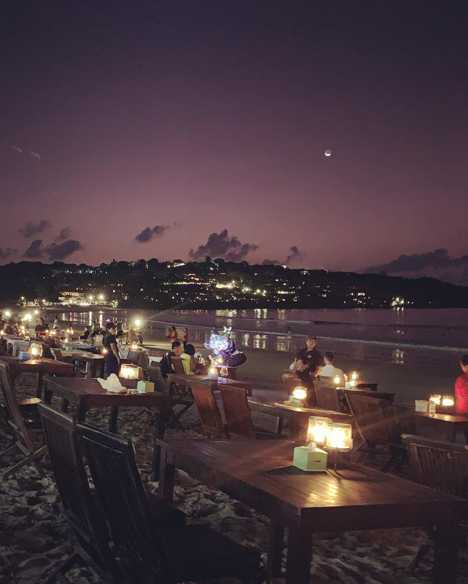

One of the newest white sand beach destinations in Bali which is in the southern part of the Bali island and get many visits by international tourist is the Melasti Beach Ungasan Bali. Melasti Beach in Ungasan Bali was previously under construction. Such as road construction, and development of supporting facilities for beach resorts. However, now the construction process is complete. Therefore, making the Melasti beach in Ungasan very convenient for visitors.
Pandawa Beach
Pandawa Beach Bali is one of the renowned white sand beaches in southern Bali. Pandawa Beach is located in Kutuh Village, Badung Regency, and previously popular among foreign tourists, named Bali secret beach. At the same time, the local community is more familiar with the name Kutuh beach.

Dreamland Beach
Dreamland Beach is one of the ‘hidden’ beaches of Bali, offering stretches of white sand secluded by limestone cliffs that line the rugged coastline of the southern Bukit Peninsula. The beach became highly accessible with the development of the Pecatu Graha and Pecatu Indah Resort projects that, at the turn of the millennium, transformed 400 hectares of hilly terrain into ‘New Kuta’, with Klapa Beach Club, resorts and the New Kuta Golf course.
Kelingking Beach
Kelingking Beach is one of the most famous spot of Nusa Penida. Major travel sites use its photo to advertise Bali and even sometimes Indonesia. The place is indeed very spectacular and really amazing. The rock of Kelingking Beach looks a little like the backbone of a dinosaur that would drink in the sea. And by the way, on Google Map the bay is called T-Rex Bay. If you are lucky you may even see Manta rays from the top of the cliff.
Balangan Beach
Balangan Beach is a white sandy beach stretch 200 meters with panoramic view to the Indian Ocean and blessed by the spectacular sunset that create the romantic nuance for every visitor who visiting this beach. This beach is also endowed by enormous wave that is demanded by all surfers in particular for experience up to professional surfers.

Jimbaran Beach
The Jimbaran beach sand color is rather yellow-white, with very calm sea waves. So it makes Jimbaran beach, Bali perfect beach for children to swim. Along the Jimbaran Bali coastline, you will see many beachside cafes serving grilled seafood.